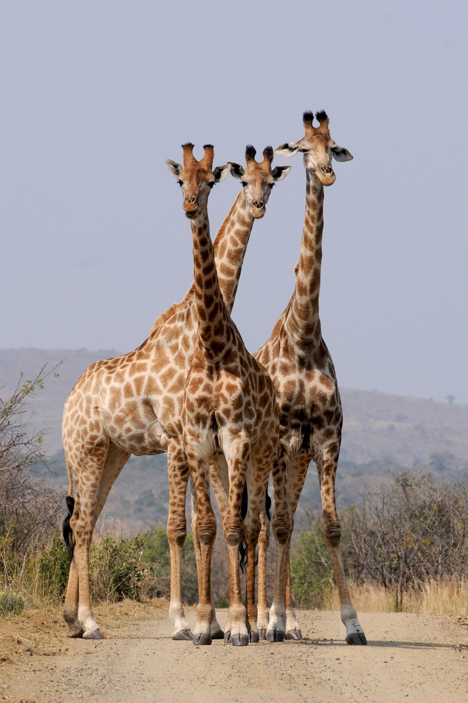
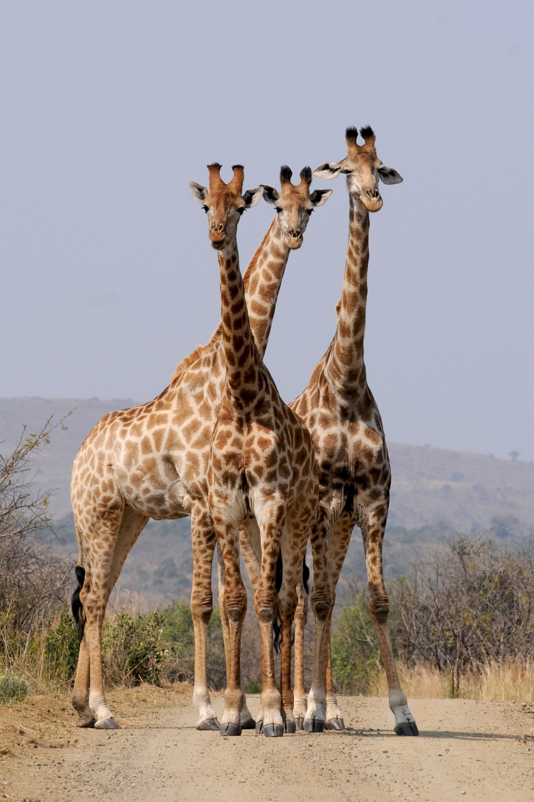

El equipo
Diego Gómez
Hola, me llamo Diego, soy el menor de 3 hermanos y nací en Cartagena pero me crié en un pueblo aledaño llamado Turbaco. Desde niño me gustó mucho el deporte y dibujar. Jugué todo lo que un niño puede jugar en su infancia, desde tenis y ajedrez, hasta beisbol con palos de escoba y fútbol con medias. En realidad no me importaba mucho el qué y el cómo siempre y cuando pudiera disfrutar con mis amigos. En mi adolescencia descubrí el amor que le tenía a la tecnología y el poder que esta tenía para generar revoluciones sociales, culturales y mejorar la vida de todos. Por ello decidí estudiar sistemas. Actualmente intento sobrevivir a mi otra aventura, que ha sido el pregrado en Matemáticas, uno de los gustos que también me acompañaron desde niño y que intento llevar hasta mi vida adulta, donde espero sea una herramienta que me ayude a contribuir al mundo de manera positiva
Isabela Sarmiento
Yo me llamo Isabela, mis papás me pusieron así por que les gustaba mucho una novela y así se llamaba la protagonista. Supongo que eso también lo heredé por que me encantan las historias, en libros, en series en películas y bueno, en novelas. De chiquita mis libros favoritos eran los de Percy Jackson, y actualmente es La Casa de Los Espíritus de Isabel Allende. Me gusta también dibujar, escribir y bordar y estoy aprendiendo japonés.
Juan Sebastián Bautista
Hola, me llamo Sebastian, nací en Bogotá y he vivido toda mi vida aquí. Toda mi vida me ha gustado mucho lo relacionado con tecnología. Por esto decidí estudiar sistemas. Me gusta mucho hablar con amigos, compartir con la gente y escuchar sus historias. Me gusta ver series y películas de estilo psicológicas. Esto fue un poco de mí.
Imágenes


 
